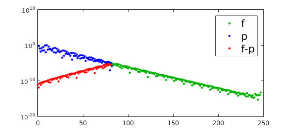
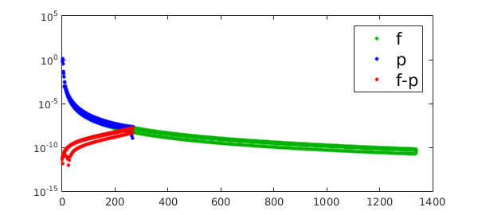

1. One dimension
This is a follow-up example of approx/AliasingCoefficients [1], to explore the accuracy in the Legendre coefficients instead of Chebyshev. A convenient way to obtain the Legendre coefficients of a Chebfun is to use cheb2leg, which implements the algorithm in [2]. cheb2leg converts the coefficients $\hat c_i$ in a Chebyshev expansion $$ p(x)=\sum_{i=0}^n \hat c_iT_i(x) $$ into a Legendre expansion $$ p(x)=\sum_{i=0}^n \hat d_iP_i(x) $$ where $P_i(x)$ is the Legendre polynomial of degree $i$. Also useful is the legvals2legcoeffs command, described in [3], which converts a vector of values at Legendre points into a vector of Legendre coefficients of the polynomial interpolant at the Legendre points.
Let's examine the difference between the Legendre coefficients of $f$, and those of its low-degree Legendre interpolant, i.e, the degree $k$ polynomial interpolant at the roots of the $(k+1)$th Legendre polynomial $P_{k+1}$. Let's first try an analytic function $f$.
clear, close all
LW = 'linewidth'; MS = 'markersize'; FS = 'fontsize';
CO = 'color'; green = [0 .7 0];
lw = 2; ms = 10; fs = 16;
fori = @(x) log(sin(10*x)+2);
f = chebfun(fori);
fc = cheb2leg(f.coeffs);
k = round(length(f)/3); % length=degree+1 of interpolant
s = legpts(k); % Legendre points
pc = legvals2legcoeffs(fori(s));
semilogy(abs(fc),'.',CO,green,LW,lw,MS,ms),hold on
plot(abs(pc),'b.',LW,lw,MS,ms)
plot(0:length(pc)-1,abs(pc-fc(1:length(pc)))+eps,'.r',LW,lw,MS,ms)
h_legend = legend('f','p','f-p');
set(h_legend,FS,fs)

The green and blue dots show the absolute values of the Legendre coefficients for $f$ and the interpolant $p$. We focus on the red dots, showing the error in Legendre coefficients. We see that just as in the previous example (Chebyshev coefficients via Chebyshev interpolation), the error in Legendre coefficients grows geometrically with the degree. However, the exceptional accuracy in the last coefficient is now lost, and $\hat d_n$ has one of the worst absolute errors among the $\hat d_i$.
Now let's repeat the computation with a non-analytic function.
fori = @(x)abs((x-0.5).^3); % twice differentiable but not analytic
f = chebfun(fori);
fc = cheb2leg(f.coeffs);
k = round(length(f)/5);
s = legpts(k);
pc = legvals2legcoeffs(fori(s));
clf
semilogy(abs(fc),'.',CO,green,LW,lw,MS,ms),hold on
plot(abs(pc),'b.',LW,lw,MS,ms)
plot(0:k-1,abs(pc(1:k)-fc(1:k))+eps,'.r',LW,lw,MS,ms*2),hold on
h_legend = legend('f','p','f-p');
set(h_legend,FS,fs),shg

While qualitatively the same observation holds, note that the red plots do not resemble a mirrored version of the green, as was in the Chebyshev case.
2. Two dimensions
As before, let's try an analogous experiment in Chebfun2. To obtain an accurate bivariate Legendre expansion we form a chebfun2 and convert its Chebyshev coefficients into Legendre coefficients by applying cheb2leg from both sides (left and right). To obtain a bivariate polynomial interpolant at the Legendre grid, we convert from values at Legendre grid points to bivariate Legendre coefficients, again using the legvals2legcoeffs command.
fori = @(x,y)(sin(x+y)+cos(x-y)); f = chebfun2(@(x,y)fori(x,y)); fc = cheb2leg(cheb2leg(chebcoeffs2(f))')'; % Legendre coefficients k = 6; s = legpts(k); xx = [];yy = []; for ii = 1:k; xx = [xx;s']; yy = [yy s]; % Legendre grid end ptc = legvals2legcoeffs(legvals2legcoeffs(fori(xx,yy))')'; % values at Legendre grid format short e abs(fc(1:k,1:k)-ptc)
ans = 1.2730e-12 2.2176e-11 6.2811e-10 1.4621e-08 2.9536e-07 5.1823e-06 2.2177e-11 4.9091e-11 6.6573e-10 1.5701e-08 3.1713e-07 5.5643e-06 6.2811e-10 6.6573e-10 4.6288e-10 5.3426e-09 1.0888e-07 1.9102e-06 1.4621e-08 1.5701e-08 5.3426e-09 2.1910e-09 2.1971e-08 3.8829e-07 2.9536e-07 3.1713e-07 1.0888e-07 2.1971e-08 6.3875e-09 5.5679e-08 5.1823e-06 5.5643e-06 1.9102e-06 3.8829e-07 5.5679e-08 1.2579e-08
As in the one-dimensional case the leading coefficient has the highest accuracy. While there is no "very accurate lower-right corner", we see some accuracy improvement in the last row and column, with the lower-right element $d_{k,k}$ (corresponding to $P_k(x)P_k(y)$) being more accurate than the rest (though not as much as in the Chebyshev case). We suspect that this is because the terms that get aliased to $P_i(x)P_j(y)$ with large $i,j$ are small to begin with: for example, we typically have $|d_{k+1,k}|\ll |d_{k+1,1}|$.
References
[1] http://www.chebfun.org/examples/approx/AliasingCoefficients.html
[2] N. Hale and A. Townsend, A fast, simple, and stable Chebyshev--Legendre transform using an asymptotic formula, SISC, 36 (2014), pp. A148-A167
[3] N. Hale and A. Townsend, A fast FFT-based discrete Legendre transform, to appear in IMA Numer. Anal.